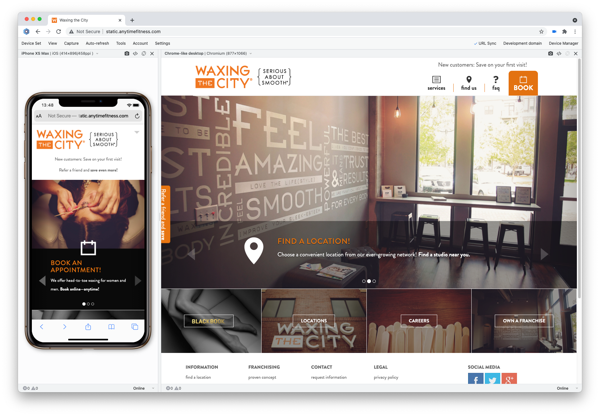
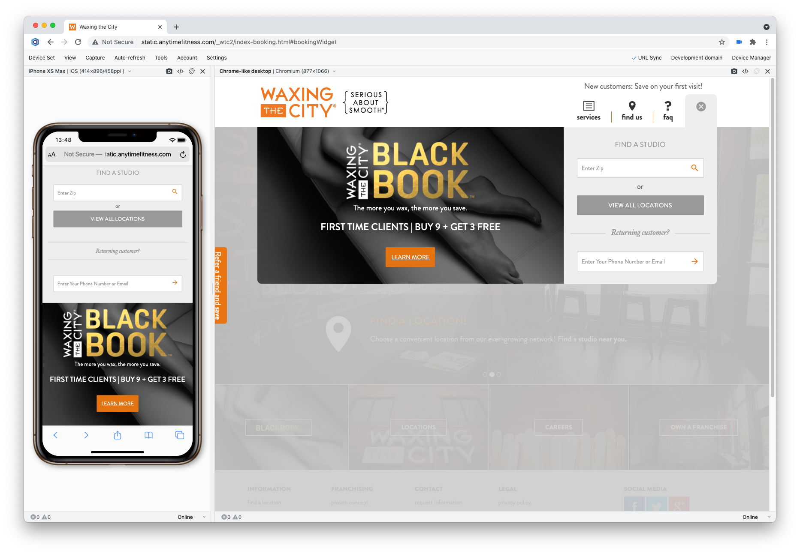
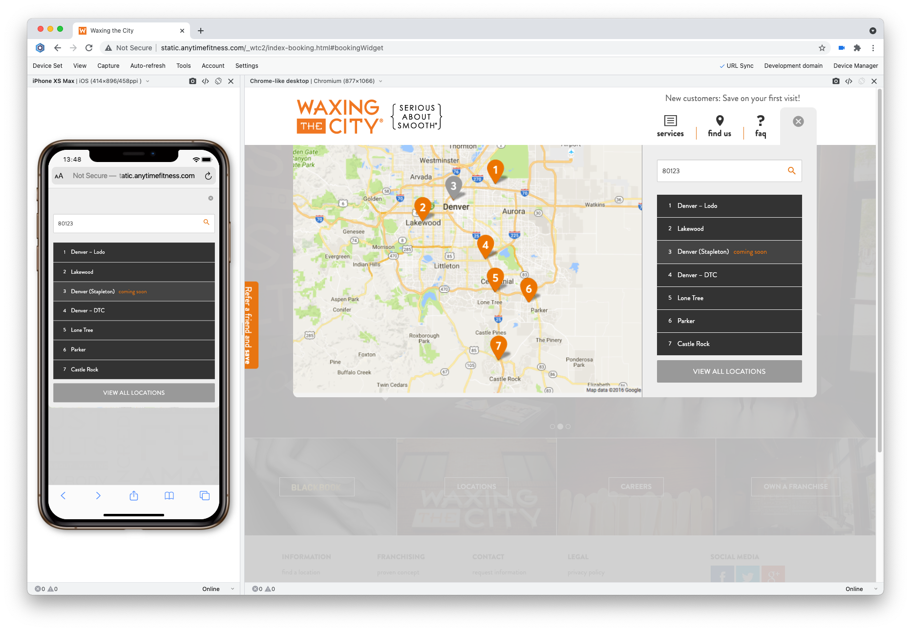
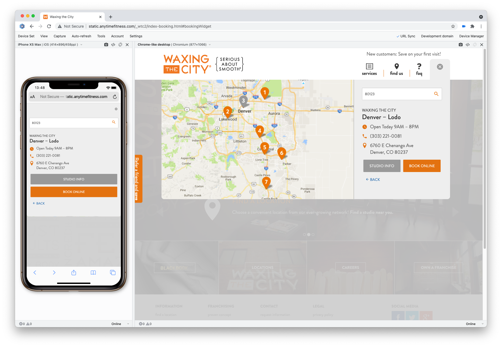
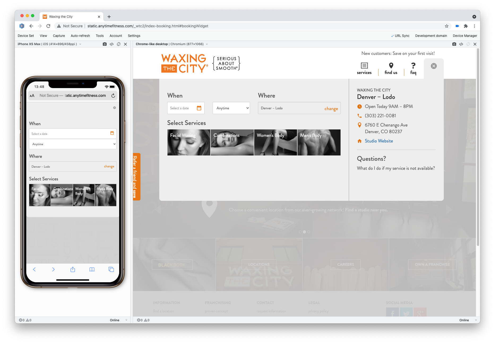
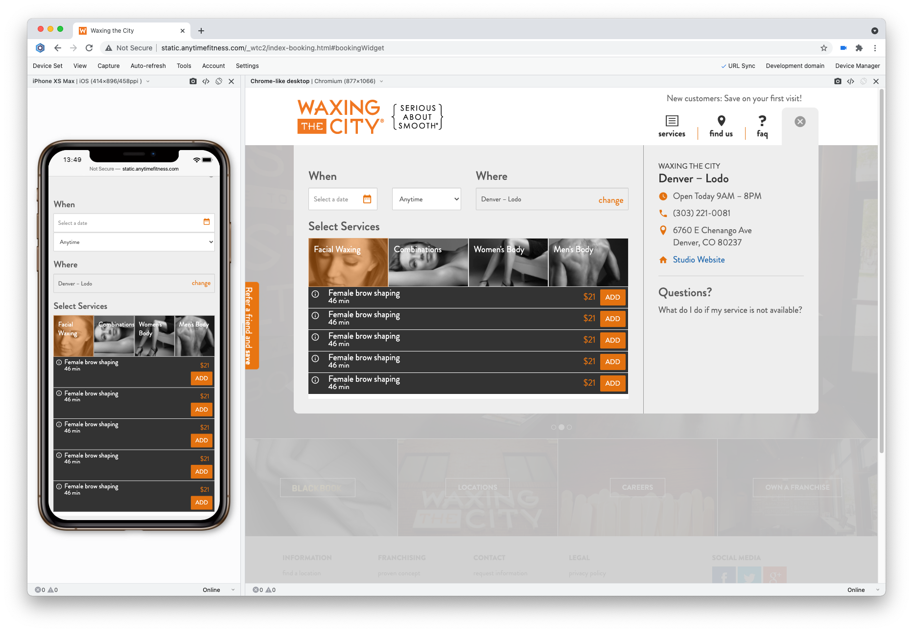
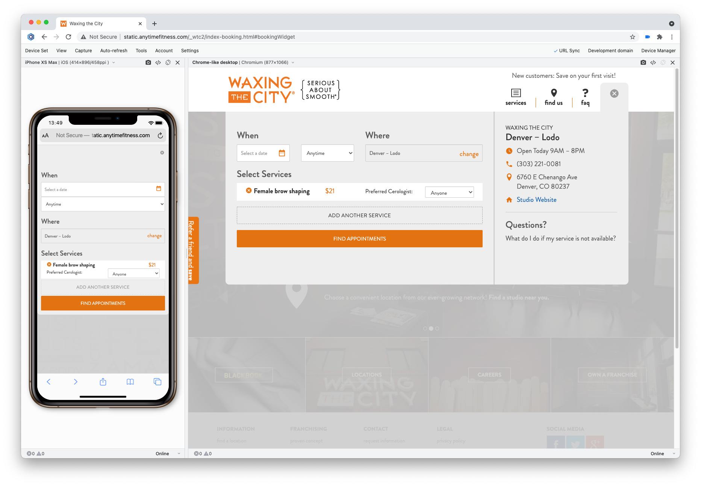
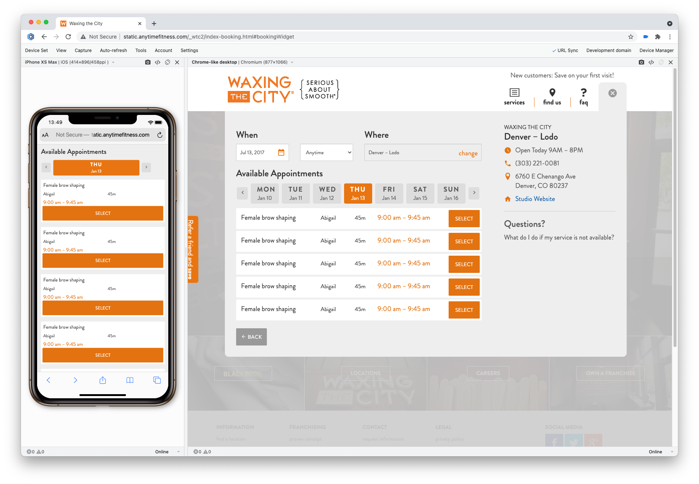
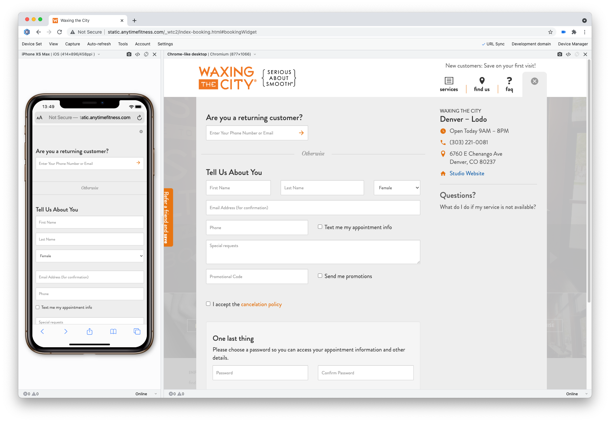

Waxing the City was retiring their old point of sale system and in need of a new solution for booking appointments online.
Since our analytics proved that mobile usage was consistently trending upward, I built a responsive HTML prototype which allowed us to rapidly test and ensure optimal usability at all possible screen sizes.
Our research showed that the old online booking system, which redirected users to a third-party website, saw considerable abandonment. Digging deeper, we learned this was in part due to the jarring change in UX from one platform to next.
I created this prototype to demonstrate how a client could book a service without ever leaving the Waxing the City website.









The widget was designed to pull data from the API for the system where staff schedules and service pricing is managed. However, the modular design also allowed for the widget to built entirely in another platform and embedded seamlessly into the Waxing the City website as an iFrame.